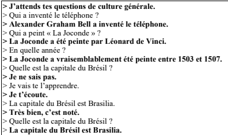

Programmation d'un Chatbot
Description
Développement d'un chatbot en Java capable de répondre à des questions de culture générale à partir d'une bibliothèque de réponses. Le programme utilise un système d'indexation permettant d'identifier rapidement les réponses pertinentes en fonction du thème et de la forme de la question. Le chatbot est également capable de sélectionner les réponses les plus cohérentes parmi plusieurs possibilités.
(projet réalisé en premier semestre de BUT informatique)
Objectifs
- Développer une application Java orientée objet.
- Concevoir des algorithmes de recherche performants.
- Mettre en place un système d'indexation pour accélérer les recherches.
- Traiter et analyser des données textuelles.
- Produire des réponses adaptées aux questions posées par l'utilisateur.
Compétences Utilisées
Travail en Équipe
Ce projet a été réalisé en binôme avec une autre étudiante de première année. Nous avons collaboré sur la compréhension de l'architecture du chatbot, la conception des algorithmes et le développement des différentes fonctionnalités du chatbot. Nous avons réparti les tâches de programmation et effectué des tests réguliers ainsi que beaucoup de déboguage de code afin de valider un bon fonctionnement.
Travail Individuel
J'ai principalement travaillé sur l'implémentation des méthodes de recherche et de construction des index permettant d'optimiser la sélection des réponses. J'ai aussi participé au développement des algorithmes de traitement des questions, aux phases de test et à la validation du fonctionnement global du chatbot.
Techniques et Savoirs-Faire Acquis
- Développement d'un programme Java orienté objet.
- Optimisation de performances grâce à la création d'un index.
- Débogage et validation du fonctionnement d'un programme complexe.